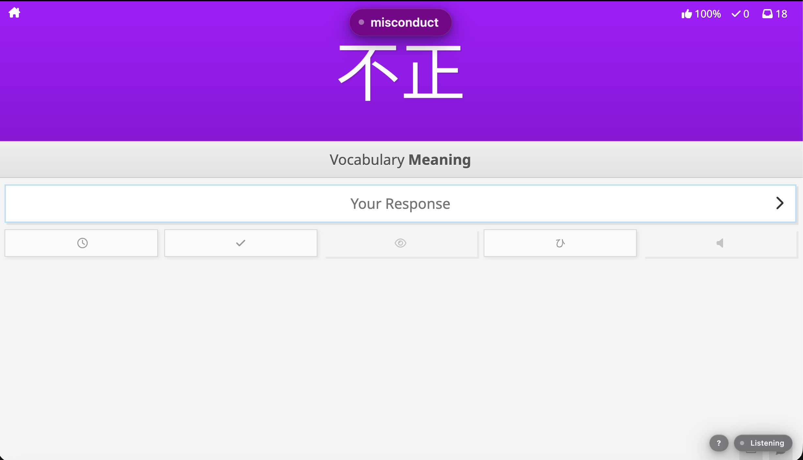
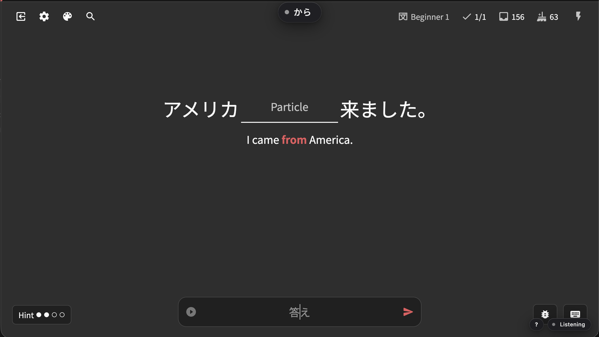

Token, microphone guidance, and review options stay together.
WaniKani API
Microphone Access
Your browser asks for microphone access the first time Kikoe starts listening.
Turbo Mode
Auto-advance after correct answers.
Corrections
Save speech corrections from the review page.
Enable the extension, open a review page, and speak your answer.